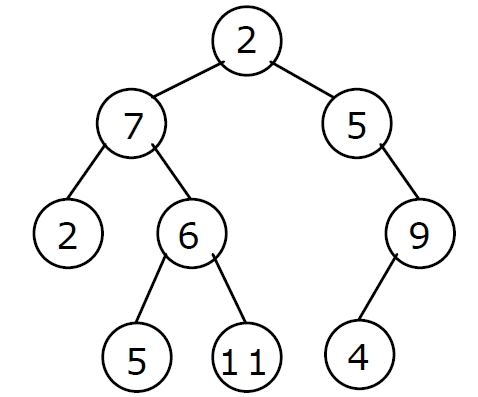

Tree Traversal:
A tree traversal is a method of visiting every node in the tree
There are four common ways to traverse a binary tree:
1. Preorder
2. Inorder
3. Postorder
Inorder Traversal
In inorder traversal, the root of each subtree is visited after its left subtree
has been visited but before the visiting of its right subtree begins. The steps for
traversing a binary tree in inorder traversal are:
Visit the left subtree,in inorder
Visit the right subtree,in order
Algorithm:
void inorder(node *root)
{
if(root != NULL)
{
inorder(root->lchild);
print root -> data;
inorder(root->rchild);
}
}
Example:

The Inorder Traversal of the above Binary Tree is:
2, 7 , 2 , 6 , 5 , 11, 5 , 9 , 4
Preorder Traversal:
In a preorder traversal, each root node is visited before its left and right subtrees are
traversed. Preorder search is also called backtracking. The steps for traversing a binary
tree in preorder traversal are:
Visit the left subtree,in preorder
Visit the right subtree,in preorder
Algorithm:
void preorder(node *root)
{
if( root != NULL )
{
print root -> data;
preorder (root -> lchild);
preorder (root -> rchild);
}
}
Example:
The Preorder Traversal of the above Binary Tree is:
2, 7 , 5 , 6 , 11, 2 , 5 , 4 , 9
Postorder Traversal:
In a postorder traversal, each root is visited after its left and right subtrees have been
traversed. The steps for traversing a binary tree in postorder traversal are:
Visit the left subtree,in postorder
Visit the right subtree,in postorder
Algorithm:
void postorder(node *root)
{
if( root != NULL )
{
postorder (root -> lchild);
postorder (root -> rchild);
print (root -> data);
}
}
Example:
The Postorder Traversal of above Binary Tree is:
2, 5 , 11, 6 , 7 , 4 , 9 , 5 , 2